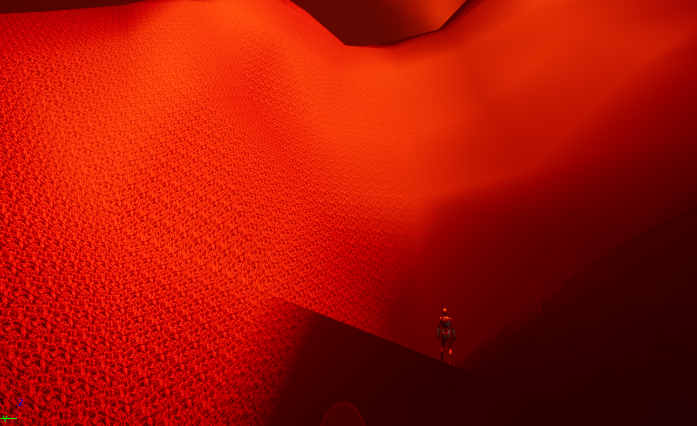

Génération Procédurale – Monde & Donjon
Dans ce projet, nous avons exploré les techniques de génération procédurale pour créer à la volée un monde ouvert et des donjons modulaires. L’objectif était de produire des environnements variés et cohérents sans intervention manuelle.
Technologies utilisées
- Moteur de jeu : Unreal Engine 5
- Langage de programmation : C++
- Algorithmes de génération : Perlin Noise, GMG (Greedy Modular Generation)
- Système de modules : acteurs modélisés en Blueprint et C++
Fonctionnalités principales
- Monde ouvert infini basé sur du Perlin Noise
- Donjons créés via BSP, divisés en salles reliées par des pièces aléatoires
- Placement automatique d’objets
Défis techniques et solutions
- **Implemetation** : apprentissage de techniques de génération procédural
- **Variété des donjons** : création de templates de salles et de corridors, assemblés aléatoirement tout en garantissant la connectivité.
Compétences développées
- Maitrise des algorithmes de noise (Perlin, Simplex) pour la génération de terrains
- Implémentation du GMG pour la création modulable de donjons
- Création de Blueprints couplés à du C++